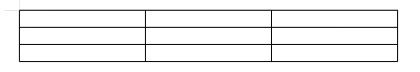
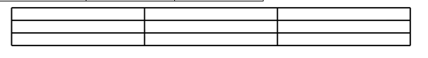
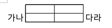
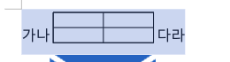
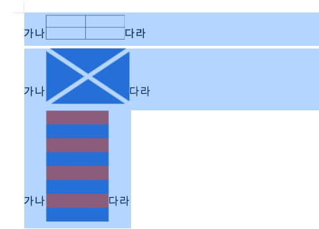

rhwp studio ↔ 한컴독스 웹한글 복사·붙여넣기 실측. 2026-08-10.
4.0px)같은 표(3×3, 폭 100mm, 기본 테두리)를 우리 편집기에서 만들고 → 전체 선택 → 복사 → 문서 끝에 붙여넣기 ("서식 유지" 선택). 테두리는 잉크질량(선을 가로질러 스캔한 (255−밝기)의 합)으로 쟀다 — 안티앨리어싱 때문에 "픽셀 두께"만으로는 굵기를 비교할 수 없어서다.
| 항목 | 원본 (우리) | 붙여넣기 후 (우리) | 한컴 기준 | 판정 |
|---|---|---|---|---|
| 세로 테두리 잉크질량 | 247 (249·235·247·257) | 482 (490·469·477·492) | 275 | 1.95배 굵어짐 |
| 선 픽셀 폭 | 1~2px | 3px | 1~2px | 불일치 |
| 표 폭 | 378px = 100.0mm | 569px = 150.5mm | 지정값 유지 | 1.5배 확장 |
| 테두리 색 | 검정(안티앨리어싱 회색) | 검정 | 검정 | 색상값 자체는 동일 |




HWP에서 테두리 굵기는 길이가 아니라 0~15 인덱스다(0=0.1mm, 1=0.12mm, 4=0.25mm, 7=0.5mm …).
렌더러는 이걸 표로 변환해 쓰는데(border_width_to_px), 클립보드 export는 인덱스를 그대로
픽셀로 쓴다.
// src/document_core/commands/clipboard.rs — apply_border_fill_css
let px = (bl.width as f64).max(1.0); // ← bl.width 는 "굵기 인덱스"
css.push_str(&format!("border-{}:{:.1}px solid {};", side, px, color));
// src/renderer/layout/border_rendering.rs — 렌더러의 올바른 변환
const WIDTHS_PX: [f64; 16] = [0.4, 0.5, 0.6, 0.75, 1.0, 1.1, 1.5, 1.9, ...];
// 0 1 2 3 4(0.25mm) 5 6 7(0.5mm)
px = 4 → border-left:4.0px solid #000000 ← 4배 과장클립보드 HTML의 <td>에 width가 아예 없다. 그래서 붙여넣기 쪽은 폭 정보를 못 받고
단 폭을 균등 분할한다 → 100mm 표가 본문 단 폭(150.5mm)으로 늘어난다.
<td style="border-left:4.0px solid #000000;border-right:4.0px solid #000000;
border-top:4.0px solid #000000;border-bottom:4.0px solid #000000;
padding:1px 5px;vertical-align:top;"> <!-- width 없음 -->
참고로 엔진에는 제대로 된 다른 export 경로가 이미 있다 —
width:38.50pt;height:21.31pt;border-top:solid #000000 0.28pt처럼 pt 단위 + 크기 포함으로
내보내는 코드가 테스트에 고정돼 있다. 클립보드 경로만 이 규약을 안 따른다.
[표] 그대로). 같은 자동화 방식으로 우리 쪽 Cmd+C는 정상 동작했으므로
한컴 웹에디터가 자체(내부) 클립보드를 쓰는 쪽에 무게가 실리지만, 자동화 한계일 가능성도 남아 있어
손으로 직접 확인이 필요하다. 확인되면 이 절을 채운다.| 항목 | 수리 전 | 수리 후 | 한컴 |
|---|---|---|---|
| 밴드 세로 규격 | 캐럿 규격(글자 상자) 16px | 줄 상자 + 줄간격 47.6px | 줄 전체 높이 |
| 표가 있는 줄 | 표(34.3px)를 못 덮음 | 표 전체 덮음(136.0~170.3 포함) | 표 포함 |
| 표 셀 안쪽 | 흰색 — 밴드에 구멍 | 파란 틴트로 덮임 | 틴트 |

원인 두 겹 — ① 밴드 세로 규격이 캐럿 규격(글자 상자)이었다. ② 그걸 고친 뒤에도 표가 있는 줄은 안 덮였는데, 줄 상자를 찾는 코드가 표 셀 안의 TextLine(13.3px)을 본문 줄로 오인했기 때문. 표 안으로 내려가지 않도록 막고, TextLine 노드가 아예 없는 인라인 표 문단은 같은 줄 본문 노드들의 합집합으로 줄 상자를 구하게 했다.
| # | 수리 | 효과 |
|---|---|---|
| 1 | 클립보드 export의 테두리 굵기를 인덱스 → mm로 변환해 내보낸다(border:0.25mm). CSS는 mm를 지원하므로 왕복이 무손실이 된다. 최소 수정은 렌더러의 border_width_to_px를 재사용하는 것. | 테두리 2배 변질 제거 |
| 2 | <td>에 셀 너비·높이를 pt(또는 mm)로 내보낸다 — 이미 다른 export 경로가 쓰는 규약. | 표 폭 1.5배 확장 제거 |
| 3 | import의 css_border_width_to_hwp 상한(현재 0.45mm 이상 전부 인덱스 7)을 전체 16단계로 확장. | 굵은 테두리(1mm+) 보존 |
측정: CDP 자동화 + 픽셀 잉크질량 스캔(선 가로지르는 (255−밝기) 합) · 원본/붙여넣기 모두 100% 배율 · 한컴 기준선은 한컴독스 웹한글 실측 · 2026-08-10